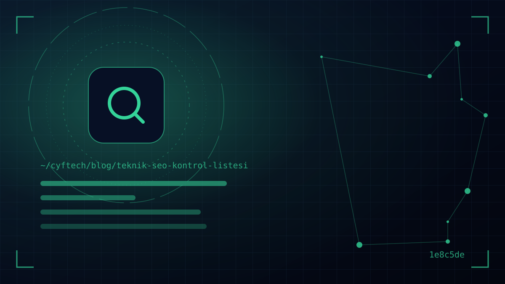

即使是写得最好的服务页面，如果 Google 无法抓取或将其编入索引，也不会出现在搜索结果中。技术 SEO 就是清理您的内容通往 Google 之路的工作，而大多数问题只需几分钟的检查就能发现。
我们把本文做成了一份审查清单。各项要点按 Google 搜索流程的顺序分组：先是抓取，然后是索引，接着是页面体验和富媒体结果。每组末尾还注明了用什么工具检查。我们主要以 Google 搜索中心的文档作为参考来源。
如果您想了解 SEO 技术之外的其他支柱， 什么是 SEO 一文提供了总体框架。在这里，我们直接深入网站的基础架构。
开始技术 SEO 审查之前：免费工具
技术 SEO 审查不需要昂贵的软件。起步阶段，以下免费工具就能完成大部分工作：
| 工具 | 用途 |
|---|---|
| Google Search Console | 索引状态、网址检查、站点地图、Core Web Vitals 和人工处置通知 |
| PageSpeed Insights | 基于真实用户数据（CrUX）和实验室测试的速度测量 |
| 富媒体搜索结果测试 | 结构化数据是否无误，以及是否符合富媒体结果条件 |
| 浏览器开发者工具 | 页面源代码、重定向、HTTP 状态码、meta 标签 |
| 网站爬虫工具 | 抓取整个网站，查找失效链接、重复标题和重定向链（许多工具的免费版足以满足小型网站） |
抓取：Google 能访问您的网站吗？
Googlebot 能够访问您的页面是一切的前提。请检查：
- 1. robots.txt 是否正确？打开 yourdomain.com/robots.txt。上线时从开发环境遗留下来的一行“Disallow: /”，会让整个网站禁止抓取。这是一个出奇常见的错误。
- 2. 您是否把 robots.txt 当作隐藏工具使用？据 Google 介绍，robots.txt 用于管理抓取，并不能把页面从搜索结果中隐藏。被屏蔽的页面如果从其他网站获得链接，即使没有内容也可能出现在索引中。要隐藏页面，应使用 noindex。
- 3. CSS 和 JavaScript 文件是否开放？Google 会像浏览器一样渲染页面；如果您屏蔽了样式和脚本文件，它就无法正确看到页面。
- 4. 服务器和 CDN 是否屏蔽了 Googlebot？防火墙或机器人防护设置可能会误把 Googlebot 当作攻击者。Google 的 AI 功能文档也建议，不仅要在 robots.txt 中，还要在 CDN 和托管基础设施中允许抓取。
- 5. 重要页面能否通过内链访问？没有任何页面链接到的“孤立”页面很难被发现。链接应使用普通的 a 标签和 href；仅通过 JavaScript 点击事件运作的链接，Google 可能无法跟踪。
- 6. 是否没有服务器错误（5xx）？持续报错的服务器会导致 Google 降低抓取速度。请查看 Search Console 中的抓取统计信息报告。
索引：正确的页面是否已编入索引？
并非每个被抓取的页面都需要编入索引；感谢页、筛选组合、购物车和管理后台都不应出现在索引中。重要的是让正确的页面进入索引。
- 7. 重要页面是否误加了 noindex？上线前开启的“禁止搜索引擎索引”选项可能被遗忘。请使用网址检查工具逐一检查您的主要页面。
- 8. 每个内容是否只有一个网址？如果 http 和 https、带 www 和不带 www、末尾带斜杠和不带斜杠的网址显示的是同一页面，应全部通过 301 重定向到同一个版本。
- 9. canonical 标签是否正确？每个页面都应将自身（或首选的主版本）标注为 canonical。Google 希望 canonical 标签、内链和站点地图指向同一网址；相互矛盾的信号会导致 Google 自行选择。
- 10. 站点地图是否干净？站点地图应只包含您希望编入索引、返回 200 状态码的 canonical 网址。单个文件最多可包含 50,000 个网址或未压缩时 50 MB；大型网站应使用站点地图索引文件。
- 11. lastmod 日期是否真实？Google 只有在 lastmod 值准确时才会使用它，并希望它反映重要的更新。priority 和 changefreq 字段则会被 Google 忽略。
- 12. 站点地图是否已提交到 Search Console，并在 robots.txt 中注明？
- 13. 内容单薄和重复的页面是否得到控制？几十个文字几乎相同的页面会浪费抓取预算并降低质量信号。请合并、充实，或者加上 noindex。
网址结构、HTTPS 与错误页面
- 14. 网址是否易读？像“/hizmetler/kurumsal-web-sitesi”这样有意义、简短、小写的网址，比“/page.php?id=482&cat=7”这类带参数的网址对用户和 Google 都更易理解。使用简单的拉丁字母代替土耳其语特殊字符，可避免分享时出现乱码。
- 15. 整个网站是否都使用 HTTPS？需要有效的 SSL 证书，且没有混合内容（https 页面中加载 http 图片或脚本）警告。HTTPS 是 Google 页面体验评估的一部分。
- 16. 已删除的页面是否返回正确的状态码？永久删除的页面应返回 404 或 410；如果有类似的替代页面，应通过 301 重定向过去。不存在的页面以“200 OK”显示空白内容（软 404）会误导 Google。
- 17. 是否没有重定向链？把从 A 到 B、再从 B 到 C 的链条缩短为直接从 A 到 C。
- 18. 您是否有用户友好的 404 页面？包含搜索框和主要分类链接的 404 页面，能把迷路的访客留在网站上。
移动优先索引与 Core Web Vitals
Google 已于 2024 年完成向移动优先索引的过渡。也就是说，它在评估您的网站时，主要抓取并索引的是移动版。在桌面端有、在移动端被隐藏的文字，对 Google 而言基本等同于不存在。
- 19. 移动端和桌面端是否提供相同的内容？标题、正文、图片、结构化数据和 meta 标签在两个版本中都应一致。
- 20. 是否有视口（viewport）标签，文字无需放大即可阅读，按钮用手指能轻松点按？
- 21. 是否达到 Core Web Vitals 阈值？根据 web.dev，良好体验要求 75% 的访问中 LCP 不超过 2.5 秒、INP 不超过 200 毫秒、CLS 不超过 0.1。INP 已于 2024 年取代 FID。
- 22. 图片是否经过优化？使用 WebP 或 AVIF 格式、按显示尺寸提供文件、屏幕外图片延迟加载，并为每张图片设置宽高值。
速度本身就是一个专业领域；关于如何优化 LCP、INP 和 CLS， 我们在网站速度与 Core Web Vitals 指南中 有详细介绍。
基于 JavaScript 的网站的技术 SEO
使用 React、Vue 或 Angular 等框架构建、在浏览器中生成内容的网站，可以被 Google 处理；但这意味着额外的步骤和额外的风险。Google 的 JavaScript SEO 文档说明，页面会先被抓取，然后排队等待渲染（render）。
- 23. 主要内容是否存在于初始 HTML 中？服务端渲染（SSR）或预渲染（静态 HTML）能让标题、正文和链接无需等待 JavaScript 即可显示。这不仅对 Google 重要，对许多人工智能爬虫也很重要；其中一部分并不执行 JavaScript。
- 24. 每个视图是否都有自己的网址？在单页应用中，内容变化时网址也应随之变化；通过“#”之后的片段管理的内容不会作为单独页面编入索引。
- 25. 在网址检查中，“已抓取的网页”视图是否完整显示内容？
在我们用定制开发构建的网站中，这些决定从一开始就已做出； 我们的网站解决方案 页面介绍了我们的做法。
结构化数据与多语言网站
- 26. 是否添加了合适的 schema 类型？Organization、LocalBusiness、Product、Article、BreadcrumbList 等标记有助于 Google 理解页面，并使页面符合富媒体结果的条件。标记必须与页面上可见的内容完全一致。
- 27. 富媒体搜索结果测试中是否没有错误？同时要建立正确的预期：自 2023 年起，Google 只在知名的权威政府和健康网站上显示常见问题解答（FAQ）富媒体结果。标记作为语义信号仍然无害，但并非在每个网站上都能带来视觉上的收益。
- 28. 多语言网站的 hreflang 是否正确？如果您有土耳其语、英语、德语等语言版本，每个页面都应通过 hreflang 标注其他语言的对应页面及其自身；链接应相互对应。Google 建议让用户自行选择语言，而不是通过 IP 自动重定向强制切换语言版本。
技术 SEO 本身不会提升排名；但一个技术错误，可能让最好的内容也无人看见。
针对 AI 功能和爬虫的技术设置
2026 年，技术 SEO 清单中新增了一个主题：人工智能。Google 的《AI 功能与您的网站》一文指出，AI 概览和 AI 模式没有特殊的技术要求，网页只要已编入索引并符合显示摘要片段的条件即可。无需新的人工智能文件或特殊标记。不过，仍有一些您需要了解的检查项：
- 29. 是否有意识地使用摘要片段控制？nosnippet、data-nosnippet 和 max-snippet 标签会限制您的内容在搜索结果和人工智能摘要中的展示程度。误加的 nosnippet 会让您的页面失去成为摘要来源的机会。
- 30. 您对人工智能爬虫的政策是否明确？Google-Extended 标识可让您限制内容被用于训练 Gemini 等模型以及某些其他 Google 系统；它不影响在 Google 搜索中的曝光。其他公司的人工智能爬虫也可以在 robots.txt 中按各自名称分别管理。屏蔽还是允许是一项商业决策；关键是要在知情的情况下做出。
在 Search Console 中，来自 AI 功能的流量包含在“网页”搜索类型的效果报告中。解决技术问题后，您可以在这里跟踪数据。
- robots.txt 中没有封禁整站的“Disallow: /”行
- 重要页面没有 noindex，canonical 指向自身
- http 和不带 www 的版本通过 301 重定向到同一网址
- 站点地图已提交，且只包含返回 200 的网址
- 移动版与桌面版提供相同的内容
- 移动端 Core Web Vitals 处于“良好”水平
- 旧网址已逐一重定向到新网址
- 结构化数据无误通过富媒体搜索结果测试
常见问题
什么是技术 SEO？
技术 SEO 是为了让搜索引擎能够顺利抓取、理解网站并将其编入索引而在基础架构层面开展的工作。robots.txt、站点地图、canonical 标签、重定向、HTTPS、移动端适配、页面速度和结构化数据都属于这一范畴。
技术 SEO 审查应该多久做一次？
对于规模小、变化少的网站，每隔几个月做一次全面检查，并定期关注 Search Console 的提醒即可。而在网站迁移、改版、更换域名或重大软件更新之前和之后，务必进行详细审查。
为什么我的页面在 Google 上搜不到？
最常见的原因有：页面带有 noindex 标签、被 robots.txt 屏蔽、没有任何页面链接到它、因内容重复而被选定了另一个网址作为 canonical，或者尚未被抓取。Search Console 中的网址检查工具基本能显示原因。
robots.txt 和 noindex 有什么区别？
robots.txt 会阻止 Google 抓取页面，但如果页面从其他地方获得链接，它可能在没有内容的情况下出现在索引中。noindex 则允许抓取页面，同时告知不要在搜索结果中显示。要将页面从结果中移除，应使用 noindex，并且不要用 robots.txt 屏蔽该页面。
人工智能搜索需要 llms.txt 这样的特殊文件吗？
根据 Google 的官方文档，要出现在 AI 概览和 AI 模式中，无需新的人工智能文件或特殊标记。网页只要已编入索引并符合显示摘要片段的条件即可。至于其他人工智能服务如何使用此类文件，则各不相同。
结语
技术 SEO 的好处在于，大多数问题都可以测量和修复。每年执行几次这份清单，并在每次重大变更前执行，能帮助您及早发现那些悄悄侵蚀曝光度的错误。技术基础稳固之后，您就可以把精力投入到内容和本地曝光上；如果您的业务面向特定区域，下一步应该是 本地 SEO 与 Google 商家资料。
在 CYF Tech 开发的网站中，我们会在上线前逐项检查这些要点。如果您想对现有网站进行技术审查，或者规划一次不损失曝光的网站迁移， 联系我们.